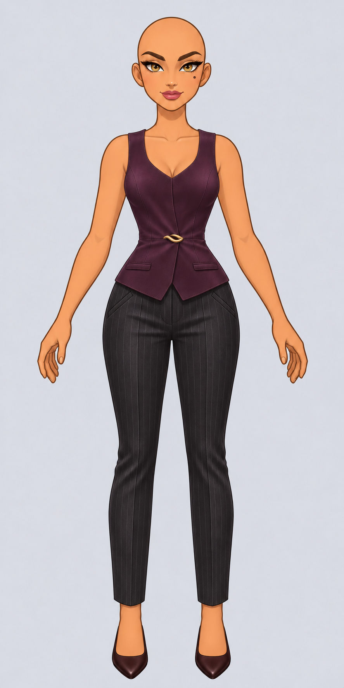
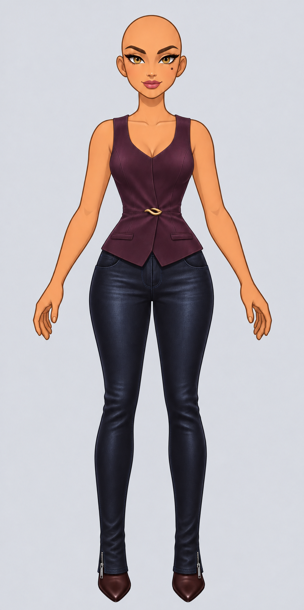
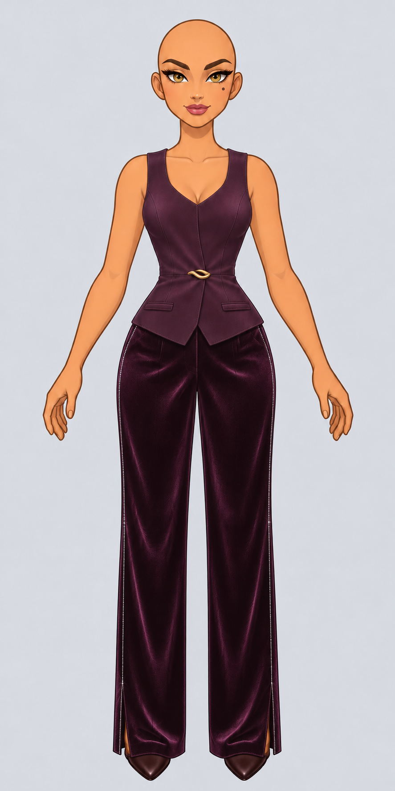

 01CadenceTailleur cigaretteLaine anthracite à fines rayures, pli pressé et cheville dégagée.
 03BitumeSkinny urbainDenim enduit bleu encre, jambe près du corps et zips aux chevilles.
 08Velours nuitSmoking de soiréeVelours prune noire, jambe longue et éclats sur les côtés.